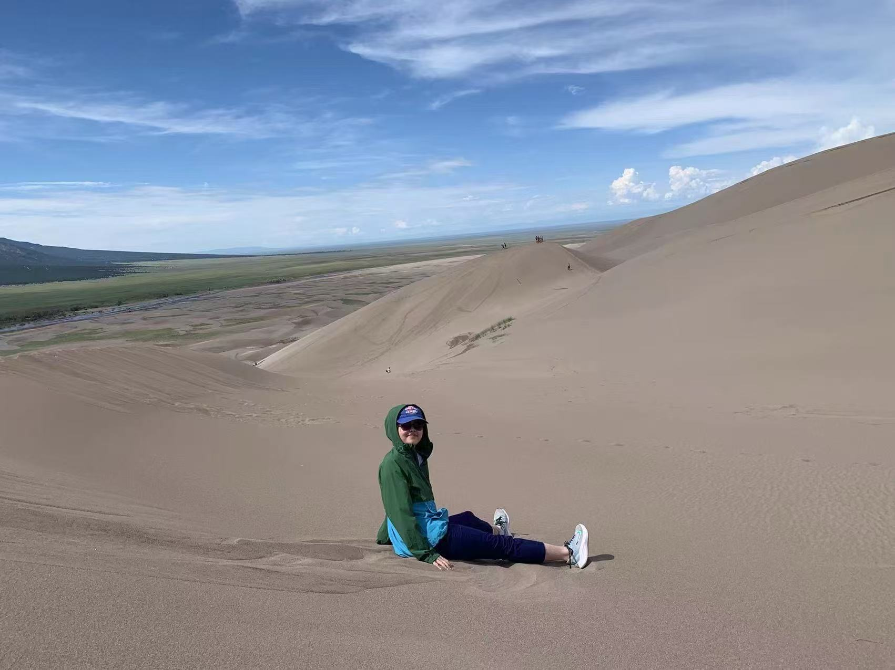

Chemistry Undergraduate · UC Berkeley
Victoria Fan
Investigating molecules at the nanoscale — from protein photochemistry to DNA origami nanostructures.

01 — Introduction
About
I am an undergraduate researcher at UC Berkeley pursuing a B.S. in Chemistry with a Computational Chemistry concentration and a minor in Bioengineering (expected May 2027). My work spans DNA nanotechnology, structural biochemistry, and data-driven approaches to biological questions.
Currently, in the Ti Lab, I design scalable and reconfigurable DNA origami self-assembling nanostructures. Previously, in the Klinman Lab, I studied cryptochrome 4 photochemistry and enzyme solvent reorganization energies. I am interested in studying and engineering molecules/systems at the intersection of chemistry, physics, and computation.
Degree
B.S. Chemistry / Computational Chemistry Concentration
Institution
UC Berkeley
Graduation
May 2027
02 — Research Experience
Research Projects
A brief overview at my current and past research projects across nanotechnology, structural biophysics, biochemistry, and neuroscience.
Project 01
July 2025 — Present · Tikhomirov Lab, UC Berkeley
DNA Origami Nanostructures
Scalable and reconfigurable DNA nanostructure design for programmable molecular assembly.
Designing and building DNA origami architectures using scaDNAno, CanDo, and oxVIEW. Optimizing synthesis via cooperative assembly principles, with analysis through gel electrophoresis and AFM. Mentoring three new undergraduate lab members in wet-lab techniques and literature.
Key Techniques
17th Annual Saegebarth Undergraduate Research Fair, Berkeley, CA (2025)
DNA Origami Scaffold Diagram
Cryptochrome 4 Protein Schematic
Nov 2023 — Dec 2025 · Klinman Lab, UC Berkeley
Cryptochrome 4 Photochemistry
Structural dynamics of pigeon CRY4 under blue-light activation — insights into avian magnetoreception.
Protein expression and purification (affinity columns, dialysis), LC/MS analysis, and gel electrophoresis. Designed PCR primers for targeted Cry4 mutations and ran GROMACS simulations of Proline trans/cis conformations at energy minimization.
Key Techniques
Jagdale, Fan, et al. "Light-induced changes in protein dynamics of pigeon CRY4: Insights into magnetoreception."
Nov 2023 — Dec 2025 · Klinman Lab, UC Berkeley
OMPDC Solvent Reorganization Energy
Stokes shift analysis of OMPDC wild-type and mutants to probe enzyme reorganization energetics.
Investigated reorganization energy of OMPDC through wild-type and three mutants at four different thermal network sites. Performed steady-state and lifetime fluorescence experiments on all 16 OMPDC mutants, then constructed Stokes shift graphs from raw fluorescence data using Python.
Key Techniques
Bay Area Chemical Biology Symposium, Palo Alto, CA (2024)
Fluorescence Stokes Shift Analysis
Atrazine Biomonitoring Study Distribution
May — Oct 2025 · Graduate Group of Endocrinology, UC Berkeley
Atrazine Biomonitoring Review
Systematic review of atrazine and metabolite concentrations in blood, urine, and sweat-based assays.
Screened 20+ papers from 6 databases with defined inclusion criteria using Zotero and Mendeley. Applied ROBINS-I V2 risk-of-bias assessment standards across studies on human atrazine exposure — leading to a co-authored publication in IJERPH (2026).
Methods
Zielke*, Garay, … Fan, et al. "A Review of Biomonitoring for Atrazine and Atrazine Metabolites Using Blood, Urine, and Sweat-Based Assays."
03 — Education
Academic Background
B.S. Chemistry
Computer Science Concentration · Minor: Bioengineering
University of California, Berkeley · Expected May 2027
Leslie Lipson Essay Prize
$40,000 total · $10,000/year · 2024–2027
Undergraduate Summer Research Stipend
$4,000 · College of Chemistry · Summer 2025
Relevant Coursework
Chemistry
- Physical Chemistry
- Inorganic Chemistry
- Organic Chemistry & Lab
- General Chemistry & Lab
Data Science
- Bayesian Data Analysis & ML
- Computational Structures in Data Science
- Discrete Math & Probability
Biology
- Biophysical Chemistry
- Cell Biology
- Genetics
Mathematics
- Linear Algebra
- Multivariable Calculus
04 — Publications & Presentations
Scholarly Output
Peer-Reviewed Publications
In preparation
Light-induced changes in protein dynamics of pigeon CRY4: Insights into magnetoreception
Jagdale, Fan, et al.
IJERPH · 2026
A Review of Biomonitoring for Atrazine and Atrazine Metabolites Using Blood, Urine, and Sweat-Based Assays
Zielke*, Garay, … Fan, et al.
Conference Presentations
05 — Skills
Technical Expertise
Laboratory Techniques
Computational
Open to Opportunities & Collaboration
I am an undergraduate researcher actively exploring graduate programs and research positions in nanotechnology, chemical biology, and computational biochemistry. Open to collaborations in DNA nanotechnology and biophysics.